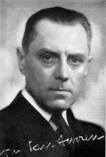

> nieuwsbrief > 2014- nr 3
Inhoud
Voor tal van mensen die via hun voorintekening op de
in oktober te verschijnen Fotobiografie Joris van
Severen en het Verdinaso hun bijdrage al
vereffenden - vormde de gedrukte versie van deze Nieuwsbrief een eerste kennismaking
met het Studiecentrum Joris van Severen. Ze zullen mettertijd
vanzelfsprekend, via onze Nieuwsbrief,
uitgenodigd worden tot deelname aan het colloquium op 25
oktober te Wakken.
Even ter herinnering: de fotobiografie - tevens
het jaarboek 2014 - zal ingebonden op albumformaat verschijnen
en 248 paginas tellen met tal van niet eerder gepubliceerde
fotos. Ook zal de uitgave een lijst van de voorintekenaars
bevatten. We willen deze intekenlijst zo volledig als mogelijk
houden, maar dit houdt wel in dat we ze uiterlijk aanvang
september definitief dienen af te sluiten. Wie tot nog toe
achterwege bleef gelieve dit in gedachten te houden en zijn
bijdrage voor 2014 tijdig te vereffenen. Deze bedraagt 45
(exclusief verzendkosten). Voor wie nu al voorziet niet te
kunnen aanwezig zijn op het colloquium zie verder - (en de
uitgave dus via de post wenst te ontvangen) beloopt de bijdrage
55 verzendkosten inbegrepen). Laat niet na dit per omgaande te
doen, zodat u ervan verzekerd bent uw naam terug te vinden in de
voorintekenlijst die in het boek zal opgenomen worden.
De Fotobiografie
leent zich overigens ook uitstekend als
relatiegeschenk. Meerdere leden bestelden in dit perspectief
meer dan een exemplaar.
Bijlage aan de
Fotobiografie: DVD Eindpunt en Opdracht
Naar
aanleiding van het traditionele bezoek aan de graven van Joris
van Severen en Jan Ryckoort van 1987 werd door het toenmalige
Nationaal Studie- en Documentatiecentrum Joris van Severen een
video aangemaakt, gerealiseerd door de studioploeg van Rudi
Reusens. Deze video waarop historische filmbeelden over het
Verdinaso afwisselen met beelden van de herdenking in 1987, zal
als DVD-bijlage deel uitmaken van de Fotobiografie en het boek
aldus een aanzienlijke meerwaarde geven. Bovendien werden aan de
reportage van 1987 originele filmbeelden toegevoegd van
jeugdkampen van het Jong Dinaso.
Noteer
nu al de datum van zaterdag 25 oktober 2014
met een stip in uw agenda. Alle praktische gegevens inzake
deelname aan het Colloquium Joris van Severen het 6e in de rij
vindt u in onze volgende Nieuwsbrief. Plaats van het gebeuren is het Goed ter Mote binnen
het nieuwe provinciale domein De Baliekouter
in Van Severens geboorteplaats Wakken.
Als
referaathouders komen drs. Luk Pauwels
en drs. Tom Cobbaert aan
het woord. Eerstgenoemde is de auteur van De ideologische evolutie
van Joris van Severen (dat als 3e Jaarboek Joris van Severen
gepubliceerd werd). De tweede referaathouder, werkzaam
binnen het ADVN, promoveerde op het proefschrift De Europese gedachte bij
de Nieuwe Orde in Vlaanderen.
Samen
zullen zij speuren naar de plaats van Joris van Severen binnen
het bredere Europese perspectief van de tussenoorlogse jaren.
Aansluitend
op het colloquium zal het 18e Jaarboek Joris van Severen
zijnde de fotobiografie waarvan hierboven uitgebreid
sprake - voorgesteld worden en is er gelegenheid kennis te maken
met het vernieuwde museum Van Hugo Verriest tot Joris van
Severen dat binnen het educatief centrum van de Baliekouter een
nieuw en waardig onderkomen vond.
Abbeville 2014 - Grafrede Abbeville 18 mei
Luc Seynaeve
Beste
aanwezigen, getrouwen van Joris van Severen en Jan Ryckoort.
Eerst
en vooral, bijzonder welkom op deze sober serene bijeenkomst
waarbij we Joris van Severen en Jan Ryckoort eervol groeten. Dit
doen we elk jaar, dit jaar de 74e keer, volgend jaar voor de 75e
keer, wat wellicht aanleiding zal geven tot wat extra aandacht.
Er
zijn niet zoveel politieke figuren die het voorrecht hebben 74
jaar na hun dood nog steeds jaarlijks gegroet te worden. Heel
zeker heeft dit iets te maken met de figuren zelf. Joris van
Severen had een inhoudelijke boodschap en Jan Ryckoort volgde
zijn leider tot in de dood.
Als
voorzitter van de Stichting
Joris van Severen hou ik eraan gebruik te maken van deze
herdenking om te wijzen op enkele belangrijke items aangaande
het maatschappijbeeld Joris van Severen. Uiteraard, in
correlatie met de toenmalige tijdsgeest.
Het
Verdinaso bestond slechts een 10-tal jaar als politieke
beweging. Het was een beweging met een totaalconcept: het
individu moet een persoon worden en de natie, zijnde de Staat,
staat in functie van de persoon. Ook het beroepsleven staat
opnieuw in functie van de persoon.
Joris
van Severen was geen voorstander van het absolute liberalisme.
De volledige vrijheid belemmert de gelijkheid en is oorzaak dat
mensen niet als gelijkwaardig worden beschouwd. Het socialisme
was een reactie tegen het misbruik van de vrijheid. Het
Verdinaso zette zich af tegen het socialisme daar deze
gedachtegang te weinig mogelijkheden bood voor het individu als
persoon. Wetende dat dit socialisme destijds sterk gebaseerd was
op de wetenschappelijke leer van het Marxisme.
Joris
van Severen koos voor de gedachte van de corporatie, waarbij de
mens centraal staat. Hij hechtte ook veel belang aan familie en
beroep. Het geheel van deze corporatieve gedachtegang leidde tot
de solidaristische orde. De filosofisch onderbouw noemt men het
solidarisme. Een derde weg als alternatief ten overstaan van het
liberalisme en socialisme.
Joris
van Severen had ook zijn ideeën omtrent het bedrijfsleven. Hij
was voorstander van solidariteit tussen werkgevers en
werknemers; hij noemde de arbeiders medewerkers van het bedrijf.
Iedereen die zich inzette voor het bedrijf was medewerker en ook
ieder was arbeider. Het syndicaal principe is nuttig én wordt
ingebed ten dien-ste van het algemeen belang. Diverse
groepsbelangen stonden steeds in functie van het algemeen
belang.
Joris
van Severen koos voor democratie maar dit binnen een
corporatieve maatschappelijke structuur en dit op basis van
solidarisme. Dit had geen enkele vergelijk met diverse partijen
en strikte partijpolitiek.
Hij
was op politiek vlak een controversiële figuur. Eerst was hij
Vlaams nationalist, daarna Heel-Nederlander en bij opportuniteit
op bepaalde momenten erg Belgicistisch.
Waarom
zeg ik dit? Precies om te duiden op het feit dat het niet
verwonderlijk was dat velen het niet makkelijk hadden Joris van
Severen te volgen in zijn evolutief denken.
De
kunst bestaat erin hem als persoon en als leider van het
Verdinaso zijn juiste plaats toe te kennen in de
maatschappelijke context van zijn tijd.
Hij
was een leider, een man met een uitgesproken maatschappijvisie.
Laat ons voornamelijk de goede punten van hem onthouden en niet
blind zijn voor zijn politieke tekortkomingen eigen aan ieder
persoon met maatschappelijk engagement.
Ter
afronding citeer ik Mia Proost die in het weekblad Wij van de Volksunie
(edities mei juni 1990) in 4 delen het leven en de gedachten
van Joris van Severen benaderde. Mevrouw Proost concludeert:
Vast staat dat heel wat van zijn ideeën tot op heden niet
verouderd zijn. Het idee der Nederlanden is en blijft van grote
waarde. Tenslotte blijft, los van de toenmalige terminologie, de
mening van Joris van Severen over zedelijke grootheid en
gemoedsadel van zeer grote waarde ook in onze tijd.
Homilie Joris van Severen-herdenking Zevenkerken
E.H. Roeland van Steenkiste
(
) België, 10 mei 1940: Joris
van Severen wordt met vele anderen, zonder enige aanleiding of
aanklacht, opgepakt, met spooktreinen weggevoerd en aan de
Fransen uitgeleverd.
Abbeville, 20 mei 1940: Joris
van Severen wordt met 21 lotgenoten vermoord. Ze worden zonder
enige vorm van proces door Franse soldaten neergeschoten.
Verraden door de achterdocht,
de haat, de rancune van een land dat Joris van Severen, met zijn
Heel-Nederlands gedachte, op zijn manier heeft gediend.
Dit land, waar wij
staatsburgers van zijn en dat ik bezwaarlijk mijn vaderland kan
noemen, kan prat gaan op talrijke wederrechterlijke vervolgingen
van de beste van zijn kinderen. Tijdens de laaghartige,
mensonwaardige repressie werden ze, na een schijnproces,
vermoord. Joris van Severen kreeg geen proces. Hij kreeg niet
eens kans zich te verdedigen.
Hij werd weggevoerd, verwijderd
uit dit land, omwille van zijn idealen, omwille van zijn
Heel-Nederlandse droom: het Dietse volk zijn fierheid, zijn
waardigheid teruggeven.
Joris van Severen werd
weggevoerd, gewelddadig verwijderd uit dit land waar hij op zijn
manier van hield, omdat hij met lijf en leden de gaafheid, de
zelfstandigheid der Nederlanden wilde beschermen.
Dat hij dit deed via de
werking, de eigen stijl, de regels van het Verdinaso was eigen
aan die tijd. Joris van Severen behoort tot de groten van het
volk der Lage Landen.
In onze huidige tijd waar de
morele, waar de christelijke, waar de algemeen humane waarden
overboord worden gegooid omwille van de enig zaligmakende
multicul en de zegeningen van de Islam, kunnen we enkel dromen
van een nieuwe Joris van Severen.
Het is onze taak trouw te zijn
aan zijn testament: het herstel van de Nederlanden, een machtig
Gemenebest, een Prinsenvolk, onaantastbaar aan zijn grenzen,
kloek en tuchtvol aaneengesloten binnen zijn grenzen. (
)
In Houe Troue aan zijn ideaal,
het behoeden van de grootsheid der Lage Landen, is Joris van
Severen vermoord. Hij leeft voort in de velen die hem nooit
zullen vergeten. Hij leeft voort in hen die zijn ideeëngoed
trouw bewaren. Hij leeft voort in hen die met hart en ziel
bidden en zingen:
Mijn schild en de betrouwen
zijt Gij, o God mijn Heer.
Op U zo wil ik bouwen, verlaat
mij nimmer weer.
Dat ik toch vroom mag blijven,
u dienaar t aller stond,
De tirannie verdrijven die mij
het hart doorwondt.
In
naam van het Abbevillecomité heet ik u hartelijk welkom op deze
herdenking. Heel speciaal een woord van welkom ook aan mevr.
Gaby Lijnkamp, dochter van mevr. Gaby Warris, die in september
2013 overleed.
Het is
74 jaar voorbij de gebeurtenissen van mei 1940.
Op
deze muur zijn ter eeuwige gedachtenis de namen van vier
slachtoffers aangebracht van een drama dat in de plooien van de
geschiedenis was verdwenen, als niemand hier was om het in
herinnering te houden. Vier onschuldigen vermalen in de hel die
oorlog heet. Met 17 anderen zonder enige verklaring opgepakt in
de chaotische meidagen van 1940 werden ze op transport gezet om
in de algemene paniek na de snelle opmars van de Duitsers als
slachtvee afgemaakt te worden. Redeloos in hun en onze ogen.
Voor de beulen leek het de rechtvaardigheid zelve. Pas als de
morgen weer aanbreekt en de duistere nacht voorbij is, daagt het
licht van de rede. Het is het aloude verhaal uit de Griekse
tragedies: verblind door de goden van de dag zijn mensen u en
ik tot de meest afgrijselijke misdaden in staat. Heracles
vermoorde in furie zijn Deianeira, Oedipus in verblinding zijn
eigen vader. En ook in Abbeville sloeg de verblinding toe. Het
mag een wonder heten dat aan het moorden een einde werd gemaakt
op het moment van diepste wanhoop, toen de dood voor alle 70
weggevoerden in de kiosk van Abbeville onvermijdelijk leek en
gebed de enige troost.
Deze
vier Bruggelingen hebben uiteindelijk een laatste rustplaats
gevonden. De erven Van Severen en Ryckoort kozen ervoor hun
dierbaren begraven te laten in Abbeville, op de uiterste grens
van hun geliefde Nederlanden. De stoffelijke resten van Maria
Ceuterick en Louis Caestecker werden eind jaren 70 overgebracht
naar het militaire kerkhof van De Panne. We hebben in een korte
plechtigheid vorige week het graf van deze vier slachtoffers
gegroet.
Terugblikkend
vanuit de veiligheid van het heden is het makkelijk de wereld op
te delen in goed en kwaad, met onszelf uiteraard aan de kant van
het goede. Niemand van ons kan zich voorstellen ooit de kant van
het kwaad te kiezen. Deze geschiedenis bewijst het tegendeel:
waar oorlog en paniek heersen, waar chaos en angst het pais en
vree verstoren, vindt de duivel zijn discipelen.
De
rede ruimde baan voor kogels en geweerkolven. Hoe eenvoudig
bleek het een mensenleven te smoren in bloed. De vraag die elk
jaar op deze herdenking gesteld moet worden: hoe zeker zijn we
zelf van onze eigen zachtmoedigheid? Hoe zeker kunnen we er zelf
van zijn dat we ons nooit laten verleiden door het Kwaad. Het is
een vraag van persoonlijke verantwoordelijkheid. Het leert het
ons dat het vernis van beschaving heel snel verdwijnen kan als
de we onze ogen niet openhouden en de verblinding ruimte geven
om haar vernietigende werk te doen.
Het
heden wordt gebouwd op fundamenten van het verleden. Het
verleden moet ons ervoor behoeden blind in barbarij te
vervallen. Ziehier het belang van Eeuwige Gedachtenis.
Vorig
jaar bracht mevr. Isabelle Ryckoort haar grootvader in
her-innering. Het comité heeft dit jaar aan de heer Bogaert
gevraagd mevr. Maria Ceuterick voor het voetlicht te plaatsen en
met haar ook de betreurde Gaby Warris voor even terug in ons
midden te brengen.
In
naam van het Abbevilecomité dank ik u hartelijk voor uw
aanwezigheid op deze herdenking en wil u alvast uitnodigen voor
de herdenking van volgend jaar. Die gaat door op zaterdag 23 mei
2015. We herdenken dan 75 jaar Abbeville.
Jean-Marie
Bogaert, Ere-schepen stad Brugge. Bestuurslid
Abbevillecomité
Maria
Johanna Ceuterick was 60 jaar toen de oorlog uitbrak in mei
1940. Ze was gehuwd met Oscar Geerolf en woonde in de
Gapaardstraat 12 in Brugge waar ze in 1911 gebouwd hadden. Ze
waren welstellende en graag geziene burgers en leefden er heel
gelukkig. Ze bezaten in de Balsemboomstraat een fabriek van
ijzer, vodden en beenderen. Het bedrijf dreef handel in het
buitenland, had meerdere mensen in dienst en was bijzonder
lucratief. Maria Ceuterick was eigenares van meerdere
huizenrijen in diverse Brugse straten.
De
Eerste Wereldoorlog deed haar met haar dochter naar Nederland
vluchten. Haar man Oscar was op dat ogenblik gemobiliseerd.
Onmiddellijk na de oorlog keerde Maria Ceuterick terug naar
Brugge. Haar dochter Maria Gabriëlle die er inmiddels een
Nederlands genieofficier Ernst Warris had leren kennen bleef in
Nederland. Ze trouwde er op 20 april 1921. Een jaar later werd
dochter Gaby geboren. Maria Gabriëlle kon evenwel in Nederland
niet echt wennen en vol heimwee kwam ook zij met haar gezinnetje
een paar jaar later terug naar Brugge. Ze namen er hun intrek
bij haar ouders Oscar en Maria Ceuterick.
Kleindochter
Gaby Warris groeide dus op in Brugge in het huis van haar
grootouders, dat ze zelf omschreef als een huis met kostbare
antiquiteiten en snuisterijen, met een tuin met fruitbomen en
heerlijk geurende seringen, en een terras met een grote wijnstok
die elk jaar veel druiven gaf.
Gaby
bracht er een onbezorgde jeugd door, waar helaas een abrupt
einde aan zou komen door het uitbreken van de Tweede
Wereldoorlog. Op 10 mei 1940 gaf de Brugse procureur immers
opdracht om Ernst Warris, de inwonende schoonzoon van Maria
Ceuterick en vader van Gaby Warris, preventief te laten
oppakken. Ernst stond als eigengereide Nederlandse protestant
gecatalogeerd als verdachte vreemdeling.
Door
zijn protestantse opvoeding had Ernst Warris immers geweigerd
het rooms-katholieke geloof van zijn vrouw en schoonouders in
Brugge te aanvaarden.
Daarom
verplichtte hij zijn vrouw en kinderen op zondag naar het
evangelisch kerkje in de veel verder gelegen Naaldenstraat te
gaan in plaats van naar de Magdalenakerk, de parochiekerk van
het katholieke gezin Geerolf-Ceuterick.
Ook
als ingenieur-architect had Ernst Warris het bijzonder moeilijk
om in het toenmalig erg roomse Brugge zijn bouwplannen
goedgekeurd te krijgen. Zijn financiële toestand dwong hem dus
bij zijn schoonouders in te wonen.
Eind
april 1940 werd zijn moeder - die als weduwe alleen in
Neder-land woonde - zwaar ziek en wilde per se haar zoon bij
zich.
Zo
kwam het dat op die bewuste 10e mei 1940 alleen thuis waren:
Gaby met haar zusjes, haar moeder Maria-Gabriëlle en haar
grootmoeder Maria Ceuterick. De Brugse politiecommissaris belde
om 9.30 uur aan in de Gapaardstraat vergezeld van 2 agenten. Hij
kwam Ernst Wallis arresteren. Toen die niet thuis bleek namen ze
dan maar zijn echtgenote mee. Even later kwamen ze evenwel terug
en ditmaal namen ze ook Maria Ceuterick mee. Er werd geen reden
opgegeven. Tegen 11 uur stond de politie daar voor de derde
maal. Kleindochter Gaby Warris rende naar de voordeur in de
overtuiging dat ze haar moeder en haar grootmoeder terug
thuisbrachten. Maar de agenten namen ook haar mee.
In het
politiebureau in de Hoogstraat werden ze herenigd. Maria
Ceuterick riep vertwijfeld uit: Het is verschrikkelijk. Wij
wonen hier al 30 jaar, iedereen kent ons, wij snappen niets van
wat hier gebeurt. We worden niet verhoord en moeten als boeven
in een dievenkar naar de gevangenis.
In het
Pandreitje moesten ze al hun persoonlijke bezittingen afgeven,
ook hun juwelen. Ze zouden ze nooit meer terugkrijgen.
Na
vijf dagen van verwaarlozing en vernedering werden ze, verstijfd
van angst op transport gezet. Eerst richting Duinkerken, daarna
naar de gevangenis van Bethune. Onder bedreigingen en
scheldpartijen van hun bewakers brachten ze vijf nachten door,
elk in een afzonderlijke cel, zonder onderling contact. Laat in
de middag van 19 mei werden ze weer ingeladen in autobussen en
vertrokken. De bedoeling was naar de gevangenis van Abbeville,
maar die bleek overvol en dus ging de tocht s nachts verder
door het park naar het muziekpaviljoen. Onder een regen van
scheldwoorden werden ze de treden naar beneden geduwd in de
kelder onder de kiosk.
De
volgende dag - 20 mei 1940 - tegen de middag: een hevig
bombardement boven Abbeville. Toen het weer stil werd vloog het
luik van de kelder open en werden 4 gevangenen naar buiten
geleid en daarna nog 4, en dan nog 4.
En dan
was het de beurt aan Joris van Severen, Jan Ryckoort en Maria
Ceuterick. Maria nam afscheid van dochter en kleindochter en
stapte moedig door de kelder. Ze struikelde op de eerste trede,
viel en werd ruw bij de schouder omhoog getrokken. Buiten werd
ze afgemaakt met vijf bajonetsteken in de borst en één in de
buik, haar schedel met een geweerkolf ingeslagen. Ze zou
uiteindelijk stikken in haar eigen bloed. Voor haar kwam de
reddende tussenkomst van de Franse luitenant Jean Leclabart
helaas te laat.
In
1978 werd Maria Ceuterick door de Belgische staat
gerehabiliteerd. Haar stoffelijk overschot werd op staatskosten
overgebracht naar de militaire begraafplaats van De Panne waar
haar nagedachtenis van alle smet werd gezuiverd.
Vandaag
spreken we haar naam Maria Ceuterick, samen met die van Joris
van Severen, Jan Ryckoort en Louis Caestecker de vier Brugse
slachtoffers van het bloedbad van Abbeville met respect en
piëteit uit.
Onze
gedachten gaan ook naar Gaby Warris, kleindochter van Maria
Ceuterick. Gaby werd door de dramatische gebeurtenissen
weliswaar haar leven lang fel getekend, maar er niet door
gebroken. Het heeft haar niet verhinderd uit te groeien tot een
talentvolle en wereldwijd bekende kunstschilderes.
Onder
haar impuls werd in 1996 deze gedenksteen aangebracht.
Gaby
overleed op 11 september vorig jaar op 91-jarige leeftijd, moe
van het vechten tegen zoveel onrecht, stilletjes als een kaarsje
uitgegaan. Met haar verdwijnt de laatste getuige van het
bloedbad van Abbeville. Ook de herinnering aan haar willen we op
deze herdenking in ere houden. De bloemen die we hebben
neergelegd zijn dus ook een beetje voor haar bedoeld.
Frans van
Dessel (Lier 27 maart
1927 Lier 13 april 2014) stond reeds vanaf zijn prille jeugd
(1934) in het Jong-Dinaso, als ploeg-leider van de Lierse
eenheid. Bij het samengaan van de jeugdbewe-gingen in 1941 werd
hij schaarleider van het NSJV om naderhand, als zovelen van zijn
generatie, de Sturmbrigade Langemarck te ver-voegen. Frans was
drager van het Dinaso-trouwkenteken en werd ten grave gedragen
onder de oude Dinaso-vlag.
Maurits Cailliau
Merkwaardig of toch weer niet? - mag heten dat in de
documenten in het Duitse dossier ter vervolging van Othmar Spann
in volgende bewoordingen ook verwezen wordt naar het Verdinaso:2
Flandern
Es ist bemerkenswert,
dass der Spann-Kreis überall dort, wo sogenannte
Erneuerungsbewegungen auftreten, versucht, mit seiner
Tätigkeit einzusetzen. Die politischen und weltanschaulichen
Gefahren, die diese Tätigkeit mit sich bringen, beweist das
Sudetendeutsche Beispiel. Es steht nun auch fest, dass sich
der Spann-Kreis in die auf nationaler Basis aufgebauten
Erneuerungsbewegung Flandern (Verbond van Dietsche
Nationalsolida-risten (Dinaso) einschaltete. Diese Bewegung
wird maßgeblich von der katholischen Kirche unterstützt und
richtet sich sehr scharf gegen Rosenberg. Die Verbindungen
wurden vor allem durch Rafael Spann3 über eine
einflussreiche Führerin dieser Bewegung, die sich auch bei
Spann verschiedentlich in Wien politische Instruktionen holte,
aufrechterhalten.
In einen Brief Rafaels
an diese Führerin vom 9.11.1935 heißt es: Ich glaube, das
beste Forum (zur Durchsetzung der Spann-Lehre) wäre Ihre
nationale Bewegung, von der Sie schreiben, dass sie sich nicht
von rassischen Gedankengängen beeindrucken lässt. Dem musste
schon von Anfang ein Gleichgewicht geboten werden.
Wie deze Führerin was
die namens het Verdinaso de betrekkingen met de Spann Kreis onderhield
valt wel niet meer te achterhalen. Wel
staat het vast en is het met tal van documenten gestaafd, dat
Joris van Severen en zijn beweging zich van langsom meer
afstandelijker tegenover het Duitse nationaalsocialisme
opstelden. Dat ook de Duitsers dit begrepen hadden, blijkt uit
heel wat documenten4 en
ook uit het hierboven aangehaalde fragment uit de Spann Akte.
Dit
belette Joris van Severen er niet van op de hoogte te blijven
van de ontwikkelingen binnen de verschillende stromingen van de
Conservatieve Revolutie, meer in het bijzonder deze van de
jong-conservatieve vleugel, waarbinnen zowel Othmar Spann als
Wilhelm Stapel en Edgar C. Jung zich situeerden.5 Uit
onze onderstaande summiere schets van de ideeën van Spann blijkt
overigens over-duidelijk dat Van Severens gedachtewereld en
dus ook het Verdinaso-programma in hoge mate verwant was aan
het denken van Othmar Spann. Het spreekt meteen ook de goedkope
bewering tegen dat Joris van Severen voornamelijk door Franse
denkers als Charles Maurras, René de La Tour du Pin en Jacques
Maritain beïnvloed was. Al ontleende hij aan laatstgenoemde
wel de personalistische klemtonen die zijn beweging een diepere
dimensie gaven.
Othmar
Spann was een Oostenrijkse filosoof die een belangrijke
invloed op het Duitse conservatieve en traditionalistische
denken in de periode na de Eerste Wereldoorlog uitoefende.
Hij kan beschouwd als een voornaam vertegenwoordiger van de
intellectuele beweging die bekend staat als de
"Conservatieve Revolutie. Spann was een professor in de
economie en sociologie aan de Weense Universiteit, waar hij
niet alleen sociale en economische theorieën doceerde, maar
ook invloed uitoefende op tal van studenten met de
presentatie van zijn wereldbeeld in zijn colleges. Daardoor vormde hij een
grote groep aanhangers bekend als de Spann Kreis.
Deze kring van intellectuelen
probeerde politici die sympathiek tegenover Spanns filosofie
stonden te beïnvloeden.
Spann
noemde zijn eigen wereldbeeld universalisme, een term die
niet mag worden verward met wat algemeen onder dat begrip
verstaan wordt. Spann ging uit van het volksbegrip, terwijl
de meer gangbare betekenis verwijst naar kosmopolitische
ideeën. Spanns universalisme werd uiteengezet in
een aantal studies, voornamelijk in Der wahre Staat,
waarin hij uitging van de waarde van nationaliteit, van het
sociale geheel boven het individu, van religieuze
(voornamelijk katholieke) waarden boven materialistische
waarden, en pleitte voor het model van een
niet-democratische, hiërarchische en corporatistische staat
als de enige valabel alternatief voor de maatschappijopbouw.
Zijn kijk op de samenleving sloot zo blijkt - nauw aan bij
de ideeën van het nationaalsolidarisme.
Sociale interpretatie
Othmar
Spann stelde dat de fundamentele waarheid van alle sociale
wetenschappen inhoudt dat het individu slechts bestaat voor
zover het lid is van een geheel. Dit concept, dat de kern
van zijn sociologie behelst, is geen ontkenning van het
bestaan van het individu, maar wel een totale weerlegging
van het individualisme als ideologie, die het bestaan en het
belang van supra-individuele realiteiten ontkent. De
klassieke individualistische
liberale theorie gaat uit van een atomistische kijk en
ziet alleen individuen als bouwsteen; mensen die dit
geloofden werden in wezen losgekoppeld en onafhankelijk van
elkaar. Ze gaan ervan uit dat
de maatschappij alleen bestaat als gevolg van een sociaal
contract. Sociologische studies hebben deze theorie
weerlegd en kwamen tot de slotsom dat het geheel (de
maatschappij) nooit alleen maar de som is van de delen
(individuen) en dat enkelingen van nature psychologische
banden hebben met elkaar. Dit
gegeven vormde het uitgangspunt van Spanns leerstellingen,
die hij op een unieke eigen manier wist te formuleren.
Individuen handelen nooit geheel onafhankelijk omdat hun
gedrag altijd ten minste gedeeltelijk bepaald wordt door de
maatschappij waarin ze leven, en door hun organische,
niet-instrumentale (en dus ook niet-contractuele) banden met
andere mensen in de samenleving. Spann zag de sociale orde in haar geheel
als een organische samenleving (een gemeenschap), waaraan
alle personen deelhebben die behoren tot een reeds bestaande
geestelijke eenheid. De
individuele persoon komt als zodanig uit het sociale geheel
waarin hij werd geboren en waarvan hij nooit echt gescheiden
kan worden.
Het
is ook belangrijk te verduidelijken dat het
samenlevingsbegrip bij Spann niet totalitair is. Hij herkent
en erkent het belang van de verschillende intermediaire
lichamen, door hem aangeduid als "gedeeltelijke gehelen",
als samenstellende delen en elementen die verschillend maar
verwant zijn, en die geharmoniseerd dienen te functioneren
binnen het geheel van de samenleving.
Nationaliteit
Volk (mensen of natie) in de zin van
nationaliteit, heeft voor Spann een culturele en ethische
basis. Hij definieerde Volk in termen van het
behoren tot een spirituele gemeenschap en niet op een
etnische of raciale bloedsgemeenschap, zoals het
nationaalsocialisme. Enkel wanneer mensen dezelfde culturele
achtergrond delen kunnen ze een volksgemeenschap vormen. Hij
bevestigt daarmee de concrete culturele gemeenschap als
basisconcept voor het idee van de natie. Dit in contrast met
de waanidee van een onbeperkte, kosmopolitische, omgang
tussen individuen.
Spanns
volksbegrip sloot aan op de christelijke opvatting over de
mens, die niet alleen zijn biologische, psychologische en
spirituele wezen in aanmerking neemt, maar deze ook wenst te
ontplooien. Dit is de reden waarom Spann de gangbare
opvatting van ras als een biologische entiteit verwierp; hij
geloofde immers niet dat raciale soorten zijn afgeleid
vanuit een biologische erfenis, net zoals hij ook niet
geloofde dat het individuele karakter van een persoon enkel
bepaald wordt door erfelijkheid. Zijn rasbegrip ging
uit van het culturele en spirituele
karakter van de persoon. Raszuiverheid wordt aldus niet
bepaald door biologische zuiverheid maar door het karakter
en een levensstijl, in overeenstemming met een bepaalde
spirituele kwaliteit. De ras-theorie
van Spann sloot aldus aan bij wat ook Oswald Spengler
vooropstelde.
De ware Staat
Othmar
Spanns universalisme was in wezen een katholieke vorm van
radicaal traditionalisme; hij geloofde dat er eeuwige
beginselen bestaan waarop elke sociale, economische en
politieke orde moest verder bouwen. De beginselen van de
Franse Revolutie - liberalisme, democratie en socialisme
wees hij af, afhankelijk als ze waren van historische
omstandigheden. Daartegenover stelde hij dat er bepaalde
principes zijn volgens dewelke de meeste oude en
middeleeuwse samenlevingen werden opgebouwd - die eeuwig
gelden, omdat ze afgeleid zijn van de Goddelijke orde.
Deze principes kon-den nieuw leven
worden ingeblazen en tot algemeen model dienen; ze zijn
immers tijdeloos en niet besmet met de ontsporingen van de
moderne wereld, zoals de schadelijke systemen - liberalisme
en communisme - afgeleid van de Franse Revolutie. Dit
tijdloze model bood de blauwdruk voor de Wahre Staat
- een corporatieve, monarchale en elitaire staat waarvoor
de universalistische filosofie de leidende gedachte vormde.
Economie
Ook
inzake economie verwierp Spann zowel het kapitalisme als het
socialisme/communisme, en pleitte hij voor een
corporatistisch systeem, relaterend aan dat van het
gildesysteem van de Middeleeuwen. Een systeem waarin het
werk en de productie zou worden georganiseerd in
corporaties, organisch gestructureerd in dienst van de staat
en de natie.
Spanns
belangrijkste reden voor de afwijzing van het kapitalisme
was gelegen in het inzicht dat het individualistisch was en
dus de neiging had om disharmonie te creëren, met een
verzwakking van de organische banden tussen individuen in
het sociale weefsel tot gevolg.
Bovendien meende Spann dat het
kapitalisme ook leidde tot een oneerlijke behandeling door
de kapitalisten van degenen onder hen. De verdienste van
Marx lag er in dat hij terecht gewezen had op de ongelijke
behandeling van werknemer en ondernemer binnen de
individualistische orde van de samenleving. Spann verwierp
echter de socialistische systemen in het algemeen; het
socialisme leek hem oppervlakkig universalistisch en was in
feite een mengsel van universalistische en
individualistische elementen. Spanns universalisme zocht daarentegen de
organische meerdeligheid als bouwstenen te gebruiken,
teneinde harmonie tot stand tot brengen.
Politiek
Spann
beweerde dat alle democratische politieke systemen een
inversie van een echt waardevolle politieke orde
belichaamden. Een groot probleem van de democratie was het
toestaan van, ten eerste: de manipulatie van de regering
door rijke kapitalisten en financiers wiens morele karakter
meestal twijfelachtig was en wiens doelen bijna nooit in
overeenstemming met het welzijn van de gemeenschap stonden;
en ten tweede: dat de democratie, die teert op het
eigenbelang van demagogen, het manipuleren van de massa niet
kan voorkomen. Maar zelfs de theoretische basis van de
democratie was, volgens Spann, gebrekkig omdat de mensen in
wezen ongelijk zijn. Democratie betekende aldus de
uitsluiting van het recht van superieure individuen om het
lot van de staat te bepalen. Ten slotte merkte Spann op dat
de vraag naar democratie en vrijheid, eens te meer, geheel
individualistisch is. In de Ware Staat, zou het individu
zijn wil ondergeschikt maken aan het geheel en zich laten
leiden door een gevoel van onbaatzuchtige solidaire plicht
in dienst aan de gemeenschap.
Het
universalisme erkende aldus de inherente ongelijkheid van de
mensen en ondersteunde een hiërarchische organisatie binnen
de politieke orde, waarbij er allereerst gelijkheid onder
gelijken zou heersen en de ondergeschiktheid van de
intellectueel inferieuren onder de intellectuele beteren.
De
staat zou worden geleid door een elite waarvan de leden
worden gekozen uit de hogere niveaus van de hiërarchie, op
basis van hun verdienste; het was in wezen een
meritocratische aristocratie.
Othmar Spann geloofde, in
overeenstemming met zijn katholieke religieuze achtergrond,
in het bestaan van een boven-sensuele, metafysische en
spirituele werkelijkheid, die afzonderlijk bestond boven de
materiële werkelijkheid. Hij stelde dat de ware staat moet
worden geïnspireerd door de christelijke spiritualiteit, en
dat haar leiders zich moeten laten leiden door hun
toewijding aan de Goddelijke wetten. Toch zou de leiding van de staat haar
legitimiteit niet alleen ontvangen vanuit haar religieuze
karakter, maar ook door het bezit van de geldige
geestelijke inhoud, die aan de machtsuitoefening
voorafgaat. Zo kwam hij tot de conclusie dat: De
geschiedenis ons leert dat het de geldigheid van geestelijke
waarden zijn die de spirituele band dienen te vormen.
Ze kunnen niet te vuur en te zwaard
vervangen of veronachtzaamd worden.
De
staat was, in Spanns optiek, gericht op herstel van het
maatschappelijke weefsel en was ook federalistisch van
naturel: het verenigen van alle gedeeltelijke gehelen
intermediaire lichamen en lokale regio's die een bepaald
niveau van lokaal zelfbestuur zouden hebben in hun
verhouding tot de hogere overheid.
Zodoende
zou opnieuw het bewustzijn - omtrent de eeuwige en absolute
krachten aanwezig in het universum - herop kunnen bloeien.
Een dergelijke conservatieve revolutie zou vervolgens,
resonerend binnen Europa, de onsterfelijke principes van het
universalisme incorporeren in het moderne politieke leven.
Spanns invloed en
receptie
De
invloed van Othmar Spann en zijn kring beperkte zich
grotendeels tot Duitsland en Oostenrijk, en het was in dit
laatste land dat hun invloed het grootst was. Spanns filosofie werd de
basis van de ideologie van de Oostenrijkse Heiwerk,
die werd geleid door Ernst Ruiger von Starhemberg. Leiders van de zogenaamde
Oostenrijks-fascistische staat, met inbegrip van Engelbert
Dollfuss en Kurt Schuschnigg, werden ook deels beïnvloed
door het denken van Spann en zijn kring. Echter, ondanks het
feit dat deze staat de enige was die echt geprobeerd geeft
om zijn ideeën te verwezenlijken, heeft Spann het zogenaamde
Austro-fascisme niet ondersteund, omdat hij een
pan-germanist was en hij het Duitse volk wilde herenigd zien
binnen een enkele staat.
Ondanks
herhaalde pogingen om de nationaalsocialistische ideologie
en de leiders van de NSDAP te beïnvloeden, werden Spanns
ideeën door de meeste nationaalsocialisten evenwel
verworpen. Alfred Rosenberg, Robert Ley en diverse
andere auteurs ontketenden een ware hetze tegen Spanns
school. Rosenberg was
geïrriteerd door zowel Spanns ontkenning van het belang van
het bloed als door zijn katholieke theocratische
standpunten. Hij stelde dat de Universele school van Othmar
Spann weliswaar de dwalingen van het materialisme en het
individualisme had weten te weerleggen, maar in al even
dwaze leerstellingen verviel door de wetten van bloed en ras
te loochenen.
Afgezien
daarvan het loochenen van de biologische wetten hadden
ook andere nazis kritiek op Spanns politieke voorstellen. Ze beweerden dat zijn
hiërarchische staat een dieper kloof tussen de mensen en hun
elite zou teweeg brengen. Hoewel het nationaalsocialisme
zelf ook elementen van elitarisme in zich droeg, was het
echter ook in hoge mate populistisch, en ging het uit van de
idee dat iedere Duitser het potentieel had een leidende rol
op te nemen.
Edgar
Jung6, die een van de meest prominente radicale
conservatieve tegenstanders van Hitler was, zette een
filosofie uiteen die opvallend vergelijkbaar was met deze
van Spann - hoewel er ook een aantal verschillen waren die
we verder kort belichten.
Jung
geloofde dat noch het fascisme noch het nationaalsocialisme
voorlopers waren van het herstel van de samenleving, maar
gewoon een andere manifestatie van de liberale,
individualistische en seculiere tradities die uit de Franse
Revolutie waren ontstaan. Het fascisme en het
nationaalsocialisme werden, volgens hem, niet geleid door
een verwijzing naar een goddelijke macht; ze waren nog
steeds besmet met de ontaarding van het individualisme.
Edgar
Jung verwierp ook het nationalisme in de strikte zin, hoewel
hij tegelijkertijd de waarde bevestigde van het Volk
en de liefde voor het vaderland, en pleitte voor de
reorganisatie van het Europese continent op federalistische
basis, met Duitsland als de leidende natie van de federatie.
Gemeenschappelijk
bekritiseerden Jung en Spann het zogenaamde wetenschappelijk
racisme omwille van zijn biologische materialistische
aard. Ook Jung werd voortdurend, tot aan het
einde van zijn leven, bestreden en uiteindelijk vermoord -
door de nationaalsocialisten.
Tot
de Anschluss van Oostenrijk bij het Rijk had Othmar
Spann verwachtingsvol tegen de ontwikkeling van het
nationaalsocialisme aangekeken. Hij koesterde de illusie dat
hij uiteindelijk het regime zou kunnen beïnvloeden en dat
het Derde Rijk zijn filosofie zou onderschrijven.
Kort
na de Anschluss in 1938 werd Spann evenwel
gearresteerd en gevangen gezet, omdat hij als een
ideologische bedreiging voor het naziregime werd beschouwd.
Hoewel hij na enkele maanden werd vrijgelaten, werd zijn
bewegingsvrijheid ingeperkt tot de omheining van zijn
landelijke woonst.
Na
de Tweede Wereldoorlog slaagde hij er nooit meer in enige
politieke invloed uit te oefenen. Maar hij liet wel zijn
sporen na in de filosofische wereld en had invloed op veel Nee
Rechte (Nieuw Rechtse) intellectuelen zoals Armin
Mohler en Gerd-Klaus Kaltenbrunner.7
Noten
_______________
1 Spann, Othmar (18781950), Oostenrijks socioloog,
sociaal filosoof en econoom. WERK: Die Haupttheorien der
Volkswirtschaftslehre (1910, 1949); Gesellschaftslehre (1914);
Der wahre Staat
(1921); Kategorienlehre (1924);
Gesellschaftsphilosophie
(1928); Geschichtsphilosophie
(1932); Gesamtausgabe
(20 dln., 19581959).
2 Bron: Die
Spann-Akte Der
Spann-Kreis. Gefahren und Auswirkungen, Ende August 1938. Deze akte wordt bewaard in het
Bundesarchiv in Koblenz, waar ze onder de benaming
Reichssicherheitshauptamt R 58/834 gearchiveerd werd. Ze werd
voor het eerst openbaar gemaakt als bijlage (pp. 135-160) van
Sebastian Maass studie Dritter
Weg und Wahrer Staat Othmar Spann, Ideeengeber der
Konservativen Revolution, Regin Verlag, Kiel, 2010. Het
aangehaalde fragment met betrekking tot Vlaanderen, aldaar, pp.
157-158.
3 Rafael
Spann (1909-1983) was een zoon van Othmar Spann.
4 We nemen ons voor om
op deze documenten terug te komen middels een jaarboekbijdrage.
5 In de
bibliotheek van Joris van Severen bevonden zich volgende werken
van Othmar Spann: Irrungen des Marxismus en Vom Wesen des Volkstums
en ook de studie van Wilhelm Stapel (1882-1954), Der christliche Staatsmann.
Eine Theologie des Nationalismus.
6 Edgar C. Jung (1894-1934),
auteur van o.m. Die
Herrschaft der Minderwertigen en kopstuk van de
jong-conservatieven, werd
door de nazis vermoord n.a.v. de Röhm-putsch de nacht der
lange messen - in 1934.
7 Bron: http://www.counter-currents.com/2013/03/othmar-spann-a-catholic-radical-traditionalist/. Onze ingekorte
bewerking. Zie ook: Walter Becher, Der Blick aufs Ganze. Das Weltbild Othmar Spanns, Universitas Verlag, München,
1985.
In deze rubriek verwijzen we zonder veel commentaar
naar recente publicaties waarin Joris van Severen en/of het
Verdinaso vermeld worden. We citeren de meest treffende
passussen woordelijk zonder daarin volledigheid na te streven.
We verzoeken onze lezers, met ons, uit te zien naar
publicaties die voor deze rubriek 'stof' kunnen leveren en ons
kopie van de betreffende passages toe te sturen.
Oogst uit de Engelstalige en Franstalige
wereld
"The
VNV had a genuine mass following in rural Flemish districts; it
received 13 percent of the vote in the four northern provinces
in 1936 and 15 percent in 1939. Its main rival was the fervent
uniformed squad of young men known as Verdinasos or Dinasos (a
contraction of Verbond van Dietsche Nationaalsolidaristen, "Band
of Dutch-speaking National Solidarists") led by a young lawyer,
Joris van Severen, with special appeal to veterans and students.
Van Severen dreamed of a Greater Netherlands like that of the
seventeenth century, including all the Flemish (Dutch) peoples
of modern Holland, Belgium, and Luxemburg."
_________
Bron: Robert Paxton, Julie Hessler, Europe in the Twentieth
Century (5e druk, Boston 2012) pagina 311:
"In
2001 a Flemish journalist Daniel Vanacker, published some
letters exchanged between Lemaître and his friend Joris van
Severen in the period 1917-21. The latter kept a diary, also
published by Vanacker, in which he often alluded to discussions
and events concerning his friend. It turns out that the young
Lemaitre presented to Van Severen his ideas concerning the
beginning of the universe in almost exactly the same words as he
used in Les Trois Premières Paroles de Dieu. His ideas
made a big impression on Van Severen."
_____________
Bron: Gerald O'Collins, Mary Ann Meyers (red.), Light from Light:
Scientists and Theologians in Dialogue, 2012, pagina
28-29:
Er
wordt in de voetnoten van deze studie expliciet verwezen naar de
publicaties van ons Studiecentrum Joris van Severen.
This damned war: One might have though[t] that the First World War
would have provided ideal material for Flemish writers. But if
many future Flemish militants and literary figures fought at the
IJzerfront, including Cyriel Verschaeve, Ernest Claes and Joris
van Severen, the conflict did not generate the quality of
literature that was found elsewhere, either because these
figures were too young at the time or because Flemish literature
had not developed sufficiently beyond the didactic stage. The
future leader of the 1930s fascist Verdinaso party, Joris van
Severen, wrote a diary of his time at the front, during which he
was sent to a French labour camp for di-stributing pro-Flemish
leaflets, Deze vervloekte oorlog - dagboek 1914-1918
(This damned War, 2005). Van Severen was murdered by French
police in May 1940."
_____________
Bron: Andre de Vries, Flanders: a Cultural
History, Oxford, 2007, pagina 19:
"Its
founder, Joris van Severen, wanted to create a large
Benelux-state which would unify the former UK [United Kingdom]
of the Netherlands, together with Luxemburg, but would keep
the Walloons, now as a clear minority, within its borders."
___________
Bron: Dirk
Berg-Schlosser, Mixed
Methods in Comparative Politics: Principles and Applications
(New York 2012):